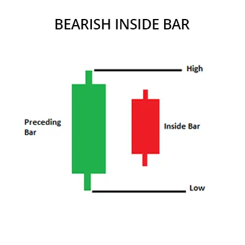
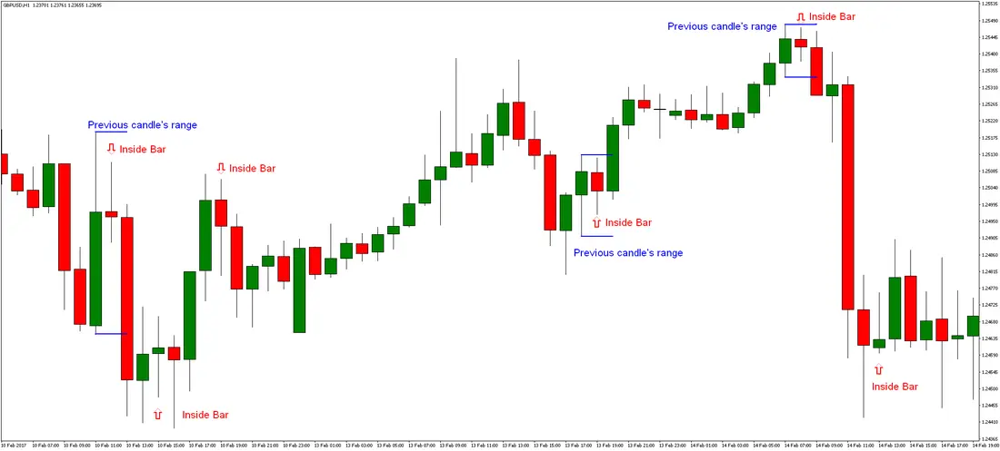

பேயரிஷ் உள்ளடக்க பட்டி முறை ஒரு வணிக முறையாகும், அது சந்தையின் மேலேற்ற பிரவணத்தை
அறிக்கையிடும் மற்றும் அவ்வளவு கீழ் வீழ்ச்சி பிரவணத்தை சுட்டிக்காட்டும். இந்த முறை இரண்டு
மெம்பான் துயர்வுகளால் உருவாகின்றது. முதல் மெம்பான் ஒரு மேலேற்ற மெம்பான்
மற்றும் இரண்டாவது மெம்பான் ஒரு கீழ்வீழ்ச்சி மெம்பான், அது முதல் மெம்பான்
உடலை முழுவதும் நிறைவேற்றுகின்றது அல்ல, முதல் அந்த
மெம்பான் திறக்கும் மற்றும் மூடும் விலைகளின் இடையே இருக்கின்றது.
